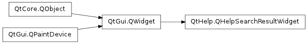

QHelpSearchResultWidget ¶

Detailed Description ¶
The PySide.QtHelp.QHelpSearchResultWidget class provides either a tree widget or a text browser depending on the used search engine to display the hits found by the search.
- PySide.QtHelp.QHelpSearchResultWidget. linkAt ( point ) ¶
-
Parameters: point – PySide.QtCore.QPoint Return type: PySide.QtCore.QUrl Returns a reference of the URL that the item at point owns, or an empty URL if no item exists at that point.
- PySide.QtHelp.QHelpSearchResultWidget. requestShowLink ( url ) ¶
-
Parameters: url – PySide.QtCore.QUrl